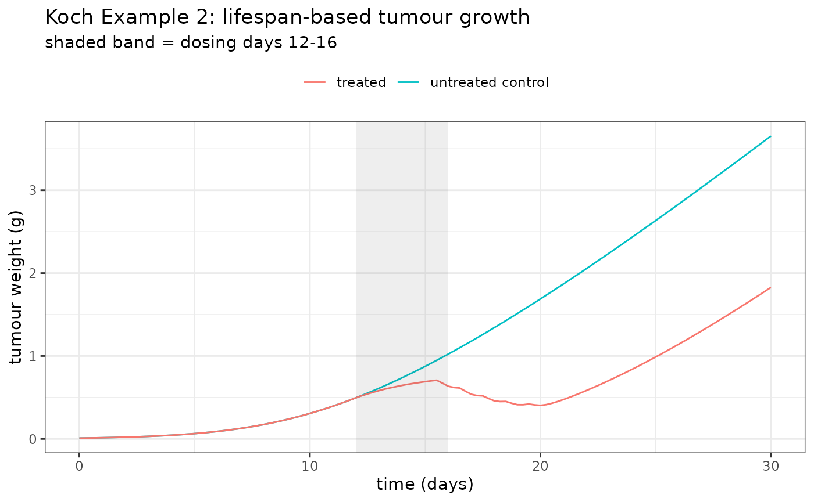
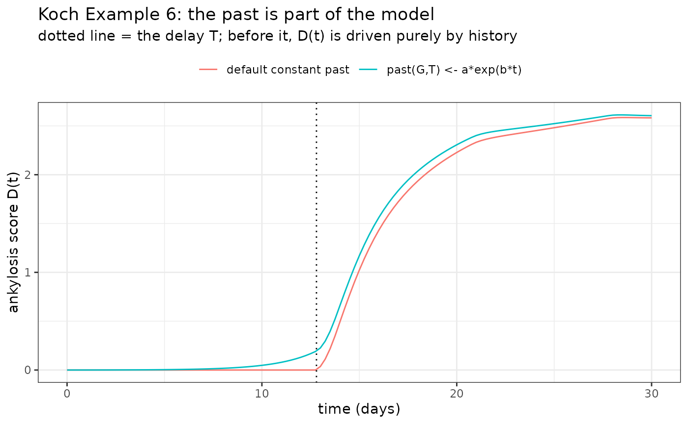

Most PKPD models say that the rate of change of a system depends on where the system is now:
Biology often disagrees. A cell that is dying today was marked for death by a drug concentration it saw several days ago; a platelet entering the circulation today was produced a week ago. In these systems the rate of change depends on where the system was, which is a delay differential equation (DDE):
Koch, Krzyzanski, Pérez-Ruixo and Schropp1 give a tutorial on these models and the two features that distinguish them from ODEs:
- the mechanism depends on the delayed state , so there is an explicit delay parameter that can be estimated; and
- a DDE needs a past on — a whole function, not just an initial value — because the system starts by reading history that predates .
rxode2 (and therefore nlmixr2) expresses
both directly:
| Concept | Syntax |
|---|---|
| the delayed state | delay(x, T) |
| a non-constant past | past(x, T) <- expr |
Without a past() statement the pre-history is the
state’s initial condition, held constant — which is what most models
want. past() is for the models that need more, and we get
to one below.
This article works two of Koch’s examples end to end: we
simulate each model from the paper’s own published
parameter values, then estimate it back — using the
same kind of estimation the original article used for each. Example 2
was an individual fit in Berkeley Madonna, so we use a derivative-free
optimizer (est="bobyqa"); Example 6 was a population fit in
Monolix, so we use est="ifoceif" (FOCEi with a
mu-referenced IRLS inner problem and the analytic Almquist outer
gradient). In both, the delay is recovered from the data.
Why bother? Delays versus transit compartments
The usual way to put a delay into an ODE model is a chain of transit compartments. That is a genuinely different model: a transit chain spreads the delay out (each molecule takes a random, gamma-distributed time to traverse it), whereas a lifespan model says every cell lives exactly days. When the underlying biology really is a lifespan, the DDE is both more faithful and much smaller — two equations instead of .
Example 2: lifespan-based tumour growth
Simeoni’s xenograft model routes drug-damaged cells through a chain of transit compartments before they die. Koch’s Example 2 rewrites it so that damaged cells instead die after an exact lifespan . The whole chain collapses into one equation whose outflow is its own inflow, delayed:
with total tumour weight and growth
Here the past is constant and zero: no drug is given before
the tumour is inoculated, so
for
.
delay() alone covers it — the default constant pre-history
is exactly right.
The parameters below are the paper’s own Berkeley Madonna values (Appendix 2): a 100 mg dose daily on days 12–16.
ex2 <- rxode2({
ka <- 103.96 * 24; ke <- 0.1052 * 24; V <- 2.7882
l0 <- 0.195; l1 <- 0.245; w0 <- 0.010
kpot <- 0.007; tau <- 3.61
d/dt(x1) <- -ka * x1 # depot
d/dt(x2) <- ka * x1 - ke * x2 # central
c <- x2 / V
cdel <- delay(x2, tau) / V # concentration tau days ago
## untreated control tumour, for reference
d/dt(x3) <- (2 * l0 * l1 * x3) / (l1 + 2 * l0 * x3)
## proliferating cells
d/dt(x4) <- (2 * l0 * l1 * x4^2) / ((l1 + 2 * l0 * x4) * (x4 + x5)) - kpot * c * x4
## apoptotic cells: damaged now, minus damaged exactly tau days ago
d/dt(x5) <- kpot * c * x4 - kpot * cdel * delay(x4, tau)
x3(0) <- w0; x4(0) <- w0; x5(0) <- 0
w <- x4 + x5 # total tumour weight
})A DDE has to interpolate its own history, so the solver must retain
it: pass dense=TRUE (and a suitable method) when solving by
hand.
ev2 <- et(seq(0, 30, by = 0.25))
for (td in 12:16) ev2 <- et(ev2, amt = 300, cmt = "x1", time = td)
s2 <- rxSolve(ex2, ev2, method = "dop853", dense = TRUE, atol = 1e-10, rtol = 1e-10)
ggplot(s2, aes(time)) +
geom_line(aes(y = x3, colour = "untreated control")) +
geom_line(aes(y = w, colour = "treated")) +
annotate("rect", xmin = 12, xmax = 16, ymin = -Inf, ymax = Inf, alpha = 0.1) +
labs(x = "time (days)", y = "tumour weight (g)", colour = NULL,
title = "Koch Example 2: lifespan-based tumour growth",
subtitle = "shaded band = dosing days 12-16") +
theme_bw() + theme(legend.position = "top")
Simulating a population
To show the delay can be recovered, we simulate 24 mice with
between-subject variability on the drug potency kpot and on
the apoptotic lifespan tau itself, and observe tumour
weight with additive error.
sim2 <- rxode2({
ka <- 103.96 * 24; ke <- 0.1052 * 24; V <- 2.7882
l0 <- 0.195; l1 <- 0.245; w0 <- 0.010
kpot <- 0.007 * exp(eta.kpot)
tau <- 3.61 * exp(eta.tau)
d/dt(x1) <- -ka * x1
d/dt(x2) <- ka * x1 - ke * x2
c <- x2 / V
cdel <- delay(x2, tau) / V
d/dt(x4) <- (2 * l0 * l1 * x4^2) / ((l1 + 2 * l0 * x4) * (x4 + x5)) - kpot * c * x4
d/dt(x5) <- kpot * c * x4 - kpot * cdel * delay(x4, tau)
x4(0) <- w0; x5(0) <- 0
w <- x4 + x5
})
set.seed(101)
obst <- c(0, 3, 6, 9, 12, 14, 16, 18, 20, 22, 24, 26, 28, 30)
N <- 16
dose <- 300 # a strong drug effect makes the delayed apoptotic removal --
ev <- et(obst) # and hence the lifespan -- observable in the tumour weight
for (td in 12:16) ev <- et(ev, amt = dose, cmt = "x1", time = td)
rows <- list()
for (i in 1:N) {
p <- c(eta.kpot = rnorm(1, 0, sqrt(0.04)), eta.tau = rnorm(1, 0, sqrt(0.02)))
s <- rxSolve(sim2, params = p, ev, method = "dop853", dense = TRUE,
returnType = "data.frame", atol = 1e-8, rtol = 1e-8)
s <- s[s$time %in% obst, ]
dv <- s$w + rnorm(nrow(s), 0, 0.02); dv[dv <= 0] <- 1e-3
rows[[i]] <- data.frame(ID = i, TIME = s$time, DV = dv, AMT = 0, EVID = 0, CMT = "x4")
}
obs <- do.call(rbind, rows)
dos <- do.call(rbind, lapply(1:N, function(i)
data.frame(ID = i, TIME = 12:16, DV = NA_real_, AMT = dose, EVID = 1, CMT = "x1")))
dat2 <- rbind(obs, dos)
dat2 <- dat2[order(dat2$ID, dat2$TIME, -dat2$EVID), ]
head(dat2)
#> ID TIME DV AMT EVID CMT
#> 1 1 0 0.00100000 0 0 x4
#> 2 1 3 0.02254589 0 0 x4
#> 3 1 6 0.09352435 0 0 x4
#> 4 1 9 0.24500364 0 0 x4
#> 225 1 12 NA 300 1 x1
#> 5 1 12 0.52642045 0 0 x4Estimating it back
Koch et al. fit this example in Berkeley Madonna as an
individual model — no random effects — and estimated
the lifespan Td directly from the data (their Table 1). We
do the same: a single-subject / naive-pooled fit estimating the drug
potency kpot and the apoptotic lifespan
tau (the delay).
The choice of optimizer matters here, and it is worth
understanding why. The delay parameter sits inside a product of two
delayed states, delay(x2, tau) * delay(x4, tau), and the PK
is stiff. A parameter like that is awkward for a gradient-based
optimizer: the model’s exact derivative with respect to the delay time
is expensive, and a finite-difference gradient is noisy because moving
tau slides the interpolated history. So we use
est="bobyqa" — Powell’s derivative-free
bounded optimizer, which only ever evaluates the objective and
never differentiates it. That is exactly the kind of optimizer Berkeley
Madonna uses, and it walks straight to the minimum.
mod2 <- function() {
ini({
tkpot <- c(log(0.002), log(0.006), log(0.02)) # bounded; truth 0.007
ttau <- c(log(1.5), log(3.0), log(6.0)) # bounded; Td, truth 3.61
add.err <- c(0.001, 0.02, 0.2)
})
model({
ka <- 103.96 * 24; ke <- 0.1052 * 24; V <- 2.7882
l0 <- 0.195; l1 <- 0.245; w0 <- 0.010
kpot <- exp(tkpot)
tau <- exp(ttau)
d/dt(x1) <- -ka * x1
d/dt(x2) <- ka * x1 - ke * x2
c <- x2 / V
cdel <- delay(x2, tau) / V
d/dt(x4) <- (2 * l0 * l1 * x4^2) / ((l1 + 2 * l0 * x4) * (x4 + x5)) - kpot * c * x4
d/dt(x5) <- kpot * c * x4 - kpot * cdel * delay(x4, tau)
x4(0) <- w0; x5(0) <- 0
w <- x4 + x5
w ~ add(add.err)
})
}optExpression=FALSE turns off common-subexpression
optimization: a delay() term has to be regenerated together
with the d/dt() of the state it delays, which defeats the
optimizer’s model-splitting on a DDE and makes assembly slow. Turning it
off skips that; the model solves fine without it.
fit2 := nlmixr2(mod2, dat2, est = "bobyqa",
control = bobyqaControl(optExpression = FALSE))
fit2
truth2 <- c(kpot = 0.007, tau = 3.61)
est2 <- exp(fixef(fit2)[c("tkpot", "ttau")])
data.frame(parameter = names(truth2),
truth = truth2,
estimate = round(est2, 4),
ratio = round(est2 / truth2, 3),
row.names = NULL)
#> parameter truth estimate ratio
#> 1 kpot 0.007 0.0068 0.975
#> 2 tau 3.610 3.7153 1.029The apoptotic lifespan tau is recovered close to its
true 3.61 days — the delay is estimated directly from the tumour-weight
data, exactly as in the original article.
Example 6: a model whose past is not constant
Example 2 got away with the default pre-history because nothing happened before . Koch’s Example 6 does not.
In collagen-induced arthritic mice, arthritis has an induction phase with no measurements, followed by a development phase where data collection starts. The cytokine GM-CSF is already being over-produced during induction, so at the system is mid-flight: its history is a growing exponential, not a constant. The model (a total arthritic score , and a strongly delayed ankylosis score ) reads
That boxed line is the whole point. is driven by with days, so for the first two weeks the ankylosis score is driven entirely by cytokine history that predates the study. Get the past wrong and the entire induction/early-response phase is wrong.
The paper implements this in MONOLIX, where the delayed state’s
initial condition is written as an expression in t
(y1_0 = a*exp(b*t)). rxode2 says the same
thing with past():
ex6 <- rxode2({
k <- 0.184; V <- 0.039
k1 <- 0.535; k2 <- 0.352; k3 <- 5
k4 <- 0.122; k5 <- 0.126
Emax <- 1; EC50 <- 44.3
T <- 12.8; I0 <- 2.42
a <- 1; b <- 0.5
d/dt(Ac) <- -k * Ac
c <- Ac / V
eff <- (Emax * c) / (EC50 + c)
G(0) <- a # continuity: a*exp(b*0) = a
d/dt(G) <- k3 - eff * G - (k1 / k2) * (1 - exp(-k2 * t)) * G
past(G, T) <- a * exp(b * t) # <- the induction-phase history, on [-T, 0]
I(0) <- I0
d/dt(I) <- k4 * G - k4 * delay(G, T)
D(0) <- 0
d/dt(D) <- k4 * delay(G, T) - k5 * D
TAS <- I + D
AKS <- D
})Checking the past against the paper
Koch derives the model’s own closed form on (their Eqs. 85–87): while , the delayed cytokine is just the history evaluated at , i.e. . That is an exact statement we can test.
probe <- rxode2({
T <- 12.8; a <- 1; b <- 0.5
k3 <- 5; k1 <- 0.535; k2 <- 0.352
G(0) <- a
d/dt(G) <- k3 - (k1 / k2) * (1 - exp(-k2 * t)) * G
past(G, T) <- a * exp(b * t)
gdel <- delay(G, T)
})
tt <- seq(0, 12.8, by = 0.1)
sp <- rxSolve(probe, et(tt), method = "dop853", dense = TRUE, atol = 1e-10, rtol = 1e-10)
max(abs(sp$gdel - 1 * exp(0.5 * (tt - 12.8)))) # vs the paper's Eq (86)/(87)
#> [1] 0Zero — past() reproduces the published closed form
exactly.
It is worth seeing what the default constant pre-history would have done here, since that is the trap this syntax exists to avoid:
ex6const <- rxode2({
k <- 0.184; V <- 0.039; k1 <- 0.535; k2 <- 0.352; k3 <- 5
k4 <- 0.122; k5 <- 0.126; Emax <- 1; EC50 <- 44.3
T <- 12.8; I0 <- 2.42; a <- 1
d/dt(Ac) <- -k * Ac
c <- Ac / V
eff <- (Emax * c) / (EC50 + c)
G(0) <- a
d/dt(G) <- k3 - eff * G - (k1 / k2) * (1 - exp(-k2 * t)) * G
I(0) <- I0
d/dt(I) <- k4 * G - k4 * delay(G, T)
D(0) <- 0
d/dt(D) <- k4 * delay(G, T) - k5 * D
AKS <- D
})
ev6 <- et(seq(0, 30, by = 0.25))
for (td in c(1, 8, 15)) ev6 <- et(ev6, amt = 1, cmt = "Ac", time = td)
s6 <- rxSolve(ex6, ev6, method = "dop853", dense = TRUE, atol = 1e-10, rtol = 1e-10)
s6c <- rxSolve(ex6const, ev6, method = "dop853", dense = TRUE, atol = 1e-10, rtol = 1e-10)
cmp <- rbind(
data.frame(time = s6$time, AKS = s6$AKS, past = "past(G,T) <- a*exp(b*t)"),
data.frame(time = s6c$time, AKS = s6c$AKS, past = "default constant past"))
ggplot(cmp, aes(time, AKS, colour = past)) +
geom_line() +
geom_vline(xintercept = 12.8, linetype = 3) +
labs(x = "time (days)", y = "ankylosis score D(t)", colour = NULL,
title = "Koch Example 6: the past is part of the model",
subtitle = "dotted line = the delay T; before it, D(t) is driven purely by history") +
theme_bw() + theme(legend.position = "top")
Simulating and estimating
We simulate a small population with three endpoints — PK (proportional error), TAS and AKS (additive) — dosing at days 1, 8 and 15, using the paper’s Table 5 population values.
sim6 <- rxode2({
k <- 0.184 * exp(eta.k)
V <- 0.039
k1 <- 0.535; k2 <- 0.352; k3 <- 5
k4 <- 0.122 * exp(eta.k4)
k5 <- 0.126 * exp(eta.k5)
Emax <- 1; EC50 <- 44.3
T <- 12.8 * exp(eta.T)
I0 <- 2.42 * exp(eta.I0)
a <- 1; b <- 0.5
d/dt(Ac) <- -k * Ac
c <- Ac / V
eff <- (Emax * c) / (EC50 + c)
G(0) <- a
d/dt(G) <- k3 - eff * G - (k1 / k2) * (1 - exp(-k2 * t)) * G
past(G, T) <- a * exp(b * t)
I(0) <- I0
d/dt(I) <- k4 * G - k4 * delay(G, T)
D(0) <- 0
d/dt(D) <- k4 * delay(G, T) - k5 * D
TAS <- I + D
AKS <- D
})
set.seed(202)
pkT <- c(1.0033, 3, 5, 7, 8.0033, 10, 15.0033, 18, 21)
pdT <- c(0, 1, 3, 5, 7, 8, 10, 12, 15, 18, 21, 25, 28)
N <- 12
ev <- et(sort(unique(c(pkT, pdT))))
for (td in c(1, 8, 15)) ev <- et(ev, amt = 1, cmt = "Ac", time = td)
rows <- list()
for (i in 1:N) {
p <- c(eta.k = rnorm(1, 0, sqrt(0.212)), eta.k4 = rnorm(1, 0, sqrt(0.279)),
eta.k5 = rnorm(1, 0, sqrt(0.3)), eta.T = rnorm(1, 0, sqrt(0.0782)),
eta.I0 = rnorm(1, 0, sqrt(0.562)))
s <- rxSolve(sim6, params = p, ev, method = "dop853", dense = TRUE,
returnType = "data.frame", atol = 1e-8, rtol = 1e-8)
spk <- s[s$time %in% pkT, ]
spd <- s[s$time %in% pdT, ]
cdv <- spk$c * (1 + rnorm(nrow(spk), 0, 0.382)); cdv[cdv <= 0] <- 1e-3
rows[[i]] <- rbind(
data.frame(ID = i, TIME = spk$time, DV = cdv, AMT = 0, EVID = 0, CMT = "c"),
data.frame(ID = i, TIME = spd$time, DV = spd$TAS + rnorm(nrow(spd), 0, 1.49),
AMT = 0, EVID = 0, CMT = "TAS"),
data.frame(ID = i, TIME = spd$time, DV = spd$AKS + rnorm(nrow(spd), 0, 0.420),
AMT = 0, EVID = 0, CMT = "AKS"))
}
obs6 <- do.call(rbind, rows)
dos6 <- do.call(rbind, lapply(1:N, function(i)
data.frame(ID = i, TIME = c(1, 8, 15), DV = NA_real_, AMT = 1, EVID = 1, CMT = "Ac")))
dat6 <- rbind(obs6, dos6)
dat6 <- dat6[order(dat6$ID, dat6$TIME, -dat6$EVID), ]We estimate the four parameters that carry the DDE structure — the
ankylosis delay T, the inflammation and destruction rates
k4 and k5, and, most interestingly,
b — with between-subject variability on the delay, and the
three residual errors, fixing the PK and cytokine-turnover constants at
the published values.
b deserves emphasis. It is the growth rate of the
induction-phase history a*exp(b*t), so it appears
only before
— the model never evaluates it at any observed time point directly. It
is identified purely through the history’s downstream effect on the
delayed ankylosis score. Estimating it is a thing you simply cannot
express without a non-constant past().
mod6 <- function() {
ini({
tk4 <- log(0.15)
tk5 <- log(0.10)
tT <- log(11) # delay, true 12.8
tb <- log(0.40) # history growth rate, true 0.5
eta.T ~ 0.0782
prop.pk <- 0.382
add.tas <- 1.49
add.aks <- 0.420
})
model({
k <- 0.184; V <- 0.039
k1 <- 0.535; k2 <- 0.352; k3 <- 5
k4 <- exp(tk4)
k5 <- exp(tk5)
Emax <- 1; EC50 <- 44.3
T <- exp(tT + eta.T)
I0 <- 2.42
a <- 1
b <- exp(tb)
d/dt(Ac) <- -k * Ac
c <- Ac / V
eff <- (Emax * c) / (EC50 + c)
G(0) <- a
d/dt(G) <- k3 - eff * G - (k1 / k2) * (1 - exp(-k2 * t)) * G
past(G, T) <- a * exp(b * t)
I(0) <- I0
d/dt(I) <- k4 * G - k4 * delay(G, T)
D(0) <- 0
d/dt(D) <- k4 * delay(G, T) - k5 * D
TAS <- I + D
AKS <- D
c ~ prop(prop.pk)
TAS ~ add(add.tas)
AKS ~ add(add.aks)
})
}
fit6 := nlmixr2(mod6, dat6, est = "ifoceif",
control = foceiControl(print = 0, covMethod = "", optExpression = FALSE))
fit6
truth6 <- c(k4 = 0.122, k5 = 0.126, T = 12.8, b = 0.5)
est6 <- exp(fixef(fit6)[c("tk4", "tk5", "tT", "tb")])
data.frame(parameter = names(truth6),
truth = truth6,
estimate = round(est6, 4),
ratio = round(est6 / truth6, 3),
row.names = NULL)
#> parameter truth estimate ratio
#> 1 k4 0.122 0.0994 0.815
#> 2 k5 0.126 0.1224 0.972
#> 3 T 12.800 13.0464 1.019
#> 4 b 0.500 0.4077 0.815The delay T comes back close to its true 12.8 days, and
— remarkably — so does the pre-history growth rate b, even
though b describes cytokine dynamics that happened before
the study began and are never observed directly. That a parameter of the
past is estimable at all is the whole point of a non-constant
past().
Practical notes
-
Keep the history. A DDE interpolates its own past,
so the solver has to record it.
nlmixr2arranges this for you when it sees adelay(); when you callrxSolve()yourself, passdense=TRUEand a dense-output method such asmethod="dop853". -
past()is only for a non-constant history. The default pre-history is the initial condition held constant, which is what Example 2 (and most lifespan models) want. Reach forpast()when the system was already running before , as in Example 6. - The delay is a parameter. is estimated like anything else and can carry a random effect; that is the main practical advantage over a transit chain, where the delay is implied by a rate constant and a fixed number of compartments.
-
Choose the optimizer to match the delay. A delay
time is a difficult parameter for a gradient-based optimizer: its exact
derivative is expensive, and a finite-difference gradient is noisy
because perturbing the delay slides the interpolated history. When a
delay is well constrained by the data (Example 6’s ankylosis score), the
gradient methods still succeed. When it is not, or when it sits inside a
stiff system and a product of delayed states (Example 2), a
derivative-free optimizer such as
est="bobyqa"— which only evaluates the objective — is far more robust. Bounding the parameters keeps such a fit from wandering into regions where the stiff solve blows up.